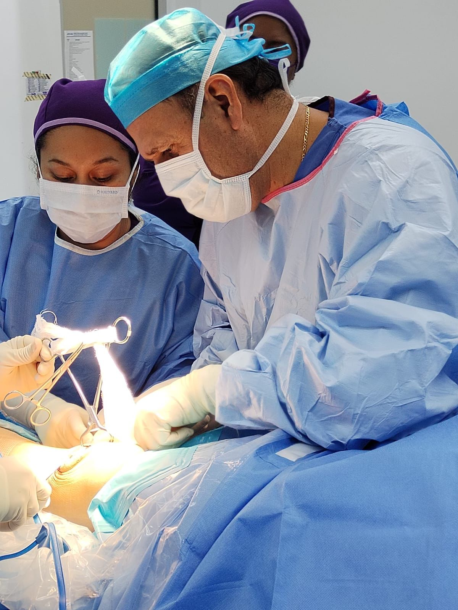

Atención experta en Reynosa para lesiones deportivas, fracturas y desgaste articular. Recupera tu calidad de vida.
Tratamientos avanzados con mínima invasión para una pronta recuperación.
Cirugía protésica avanzada para pacientes con osteoartritis severa o desgaste articular.
Reparación de ligamentos y meniscos mediante incisiones mínimas y tecnología láser.
Atención inmediata de urgencias traumatológicas y reconstrucción ósea compleja.

El Dr. Enrique Saldaña López cuenta con una sólida formación en ortopedia quirúrgica, enfocado en brindar soluciones definitivas a problemas crónicos de dolor y limitación física.
"Nuestra prioridad es que vuelvas a moverte sin limitaciones, utilizando los protocolos más seguros de la medicina moderna."
Momentos que reflejan el compromiso, la precisión y el cuidado en cada procedimiento.
Resolvemos las dudas más comunes de nuestros pacientes.
Tiburcio Garza Zamora Kilómetro 5.5,
Rancho Grande, Sin Nombre de Col 12, CP 88610.
Reynosa, Tamaulipas, México.
Teléfono: +52 (899) 221.00.25
Urgencias: +52 (899) 936.26.66
Email: enrisal1410@hotmail.com
Lunes a Viernes: 10:00 - 13:00 hrs y 16:00 - 18:30 hrs.
Sábado: 10:00 - 13:00 hrs. (Previa Cita)